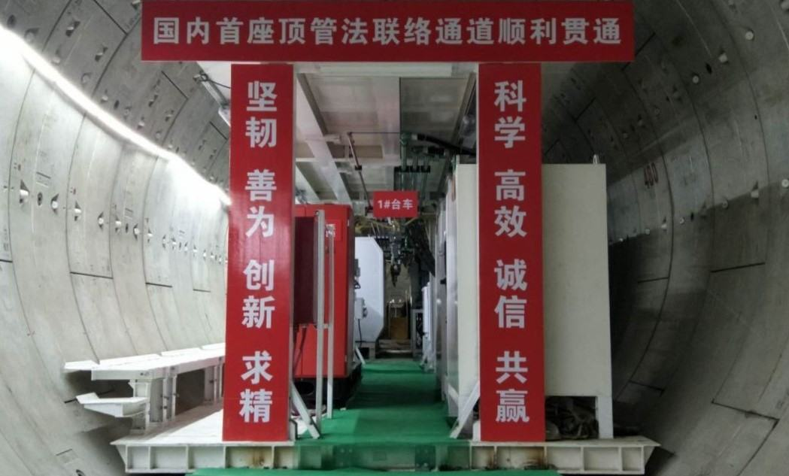
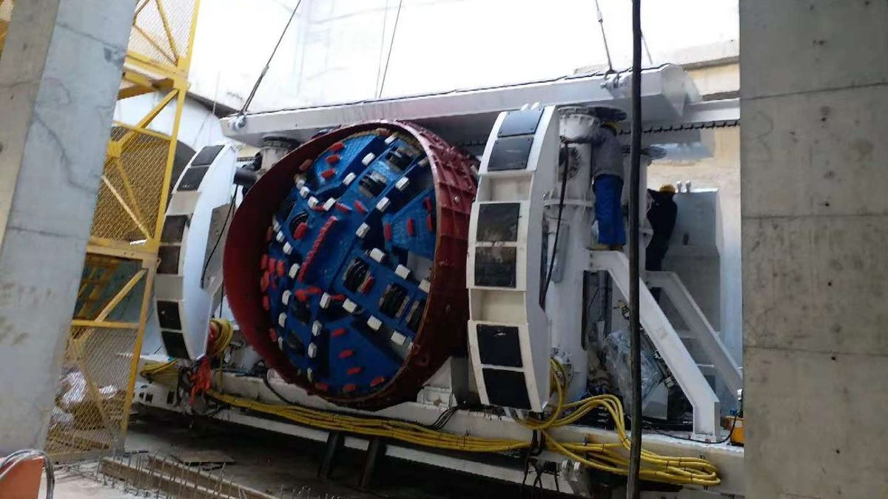
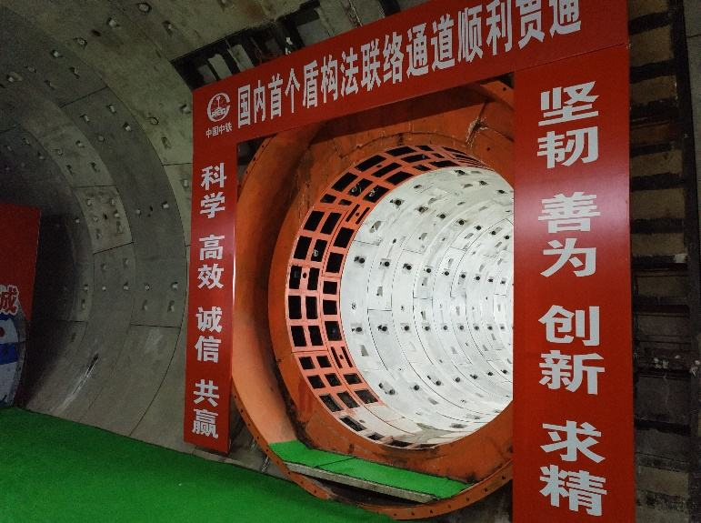

随着城市地下空间开发日益精细化、网络化，需要在既有隧道中建设联络通道，依据《地铁设计规范》：“两条单线区间隧道之间应设联络通道，相邻联络通道的距离不大于600m”，仅轨道交通领域联络通道的建设体量就十分庞大。传统隧道联络通道采用矿山法开挖，存在造价高、风险大、工期长等问题，而采用机械法施工，设备需要解决弧形管片切削、始发接收端主隧道支撑、狭窄空间整机系统集成三大难题。
项目组围绕上述难题，历经数年“产学研用”协同攻关，突破了隧道联络通道掘进机关键技术，自主研发了系列联络通道掘进机并实现产业化。核心创新如下：
基于不同类型刀盘切削弧形管片时的受力分析，发明了锥形仿形刀盘结构；根据不同材料及掘进参数对管片切削效率影响规律，探索出切削刀具最优布置方式及控制参数；同时发明了具备载荷顺应性的紧凑型驱动及其控制技术，最终解决了主隧道凹凸弧形管片切削难题，实现强度70MPa的玻璃纤维筋混凝土管片的切削，平均用时6h，较传统破除方法效率提升5倍。
构建了主隧道受力计算模型，揭示出耦合作用下主隧道变形规律，发明了移动式管片预应力支撑系统，实现了始发接收端主隧道管片预应力支撑，开发了管片预应力监测与控制系统，实现支撑系统实时响应与应力控制，保证主隧道在施工过程中结构的安全与稳定，主隧道变形≤10mm，满足设计规范要求。
研制了集开挖、出渣、主隧道支护等系统于机动平台的集约化整机，基于推力、扭矩的变化特性，研制出曲面连接的始发接收密封套筒，首创了主梁回转式拼装机及其控制系统，实现狭小空间下管片高效拼装，最终解决了狭窄隧道内的掘进机始发、掘进及接收难题，单条隧道平均掘进时间30天，与传统工法相比，效率提升4倍。
基于上述创新，研制出隧道联络通道掘进机，形成了系统化设计制造方法与技术，授权专利14项，软件著作权2项，其中整机专利获得第二十一届国家专利奖金奖，经中国中铁专家组鉴定整机技术达到世界领先水平。
成果转化联络通道掘进机10余台套，应用于国内外8个城市50余条联络通道掘进施工，为联络通道施工提供了新的解决方案，促进了地下空间开发新工法与新设备的协同创新，推动了隧道和地下空间开发领域的巨大进步。
主要创新点一：发明了空间曲面隧道管片开挖技术
【技术难点】刀盘切削主隧道既有弧形管片，切削轨迹形状复杂，且管片强度高。刀盘切削管片过程中，刀具与管片不能保证全接触，刀盘容易偏载，对刀盘结构强度安全性造成影响。同时刀盘冲击载荷大，对驱动设计具有特殊要求。
【研究成果】基于不同类型刀盘切削弧形管片时的受力分析，发明了锥形仿形刀盘结构；根据不同材料及掘进参数对管片切削效率影响规律，探索出切削刀具最优布置方式及控制参数；同时发明了具备载荷顺应性的紧凑型驱动及其控制技术，最终解决了主隧道凹凸弧形管片切削难题。
（1）基于不同类型刀盘切削弧形管片时的受力分析，发明了锥形仿形刀盘结构。刀盘结构形式不同可分为以下几种类型：垂直平面型、穹顶型、收缩型、倾斜型。本项目设计需考虑空间的限制与不同刀盘受力情况。平面和收缩型的刀盘周边空间占用较大，结构受力方面，根据有限元分析平面型和收缩型的刀盘结构受力能力差。因此平面和收缩型的刀盘不适用于本项目联络通道空间曲面管片开挖。穹顶型的刀盘结构形式理论上适用于弧形混凝土管片的切削，在此基础上，依据联络通道施工工况及受力分析，发明出适用于弧形管片的锥形仿形刀盘结构。
（2）探索了切削刀具最优布置方式及控制参数，依托掘进模态综合实验台开展联络通道用盾构机刀盘模拟切削实验，验证刀盘结构及刀具配置方案是否合理及切削过程中姿态及振动情况。分别以垂直和水平状态针对各样岩样以不同材质的刀具、刀间距布置和不一样的破岩切削速度、进给量进行实验，进一步统计分析出不同刀具参数导致的破岩效率和刀具寿命，为相应的工程配置不同材质的刀具及布置，满足实际施工的需要。经过试验分析，锥形刀盘刀具布置对玻璃纤维筋具有足够的切断能力，与以往经验相比，切削效果优于平面刀盘。锥形刀盘切割玻璃纤维筋时，纤维筋的切断尺寸主要受纤维筋布置方式的影响。通过分析切割弧形板后刀具的磨损情况，评估该刀盘的刀具的破岩能力。
（3）发明了具备载荷顺应性的紧凑型驱动及其控制技术，联络通道用掘进机驱动分布形式不同于常规盾构，由于主机长度受始发、接收空间的限制，主机内布置高度集成。另外，联络通道施工在进出洞时需切削混凝土管片，为适应高强度管片切削，主驱动需要具有较高扭矩和较强稳定性。为适应联络通道掘进机高功率密度、大扭矩、高稳定性的特点，主驱动设计采用中心轴驱动，能够满足集约化设计要求，同时采用电比例闭式液压系统驱动方式，通过对比刀盘扭矩曲线和液压系统压力曲线，验证了该驱动对交变载荷的适应能力强，响应时间短、超调量小。
基于以上技术成功研制出能够适应空间曲面管片开挖系统，最终解决了主隧道凹凸弧形管片切削难题，实现强度70MPa的玻璃纤维筋混凝土管片的切削，平均用时6h，较传统破除方法效率提升5倍。
主要创新点二：突破了移动式管片预应力支撑及监控技术
【技术难点】在联络通道施工的过程中，主隧道管片破损之后，管片会受到土体压力作用，而且当联络通道盾构机在开挖联络通道时，其推进缸所产生的推力会施加在主隧道管片内壁上，为了保证主隧道结构稳定，需要在管片内壁面上设置一用于防止其变形的管片稳定支撑装置。
【研究成果】构建了主隧道受力计算模型，揭示出耦合作用下主隧道变形规律，发明了移动式管片预应力支撑系统，实现了始发接收端主隧道管片预应力支撑，开发了管片预应力监测与控制系统，实现支撑系统实时响应与应力控制，保证主隧道在施工过程中结构的安全与稳定。
（1）揭示出耦合作用下主隧道变形规律，发明了移动式管片预应力支撑系统。通过构建主隧道受力计算模型，根据主隧道不同加载情况进行分析，揭示出耦合作用下主隧道变形规律。基于主隧道变形规律，发明了移动式管片预应力支撑系统。该系统包括外部支撑撑靴体系、内支撑台车体系和用于控制外部支撑撑靴伸缩的液压系统以及电气控制系统，外部支撑撑靴体系主要包括上、下、左、右四部分支撑撑靴，对各个支撑撑靴的结构稳定性需要进行有限元分析，以确保整个联络通道施工过程的安全性。当管片稳定支撑结构在主隧道内部移动时，外部支撑撑靴通过油缸呈现回缩状态以方便内支撑台车体系的运输，当放置于内支撑台车体系上的主机系统运输至始发洞门时，外支架可通过安装于内支撑台车体系上的油缸将其撑紧于主隧道管片的内壁面上。
（2）开发了管片预应力监测与控制系统，实现支撑系统实时响应与应力控制。当管片结构破坏系统受力状态发生变化时，液压系统压力升高，内支撑环支撑力变化可通过液压系统压力传感器输入到控制系统。控制系统通过继电器、接触器控制高压支撑泵、辅助泵，同时通过传感器采集支撑系统各个油缸位移、压力，并将数据传输给上位机和地面监控系统。上位机界面显示顶撑系统各个油缸的压力、位移，同时可以通过控制台、设置各个油缸的压力比，来实现对各个油缸的单独控制。
通过移动式管片预应力支撑系统保证主隧道在施工过程中结构的安全与稳定，经现场工程应用监测主隧道变形≤10mm，满足规范要求。
主要创新点三：发明了集约空间下的整机系统集成技术
【技术难点】联络通道掘进机需要在既有的主隧道中进行施工，空间有限，同时设备采用T型始发，整机需要针对开挖、出渣、以及物料转运进行针对性设计，满足狭窄空间始发与掘进。
【研究成果】研制了集开挖、出渣、主隧道支护等系统于机动平台的集约化整机，基于推力、扭矩的变化特性，研制出曲面连接的始发接收密封套筒，首创了主梁回转式拼装机及其控制系统，实现狭小空间下管片高效拼装，最终解决了狭窄隧道内的掘进机始发、掘进及接收难题。
（1）研制了集开挖、出渣、主隧道支护等系统于机动平台的集约化整机，基于主隧道空间结构，采用集约化、模块化设计，实现开挖、出渣、支护、拼装、推进、密封、物料转运等系统集成。创新性的将盾构法和顶管法进行融合，采用模块化设计，施工单位可根据联络通道的线型和左右线间距，通过模块组合实现不同工法的灵活选择。
（2）研制出曲面连接的始发接收密封套筒，基于套筒直径和壁厚随推力、扭矩的变化特性，研制了曲面连接的始发接收密封套筒。始发钢套筒采用半封闭式设计，掘进过程中尾刷压缩在管片上，形成3道密封腔保证套筒内密封性。接收套筒为全封闭式结构，钢套筒后在钢套筒内回填砂土，预加一定压力，实现套筒内外压力平衡，主机出洞时不会出现压力突变而造成隧道结构失稳。由于联络通道在既有隧道内始发，联络通道用始发和接收钢套筒需与既有隧道进行连接，连接面为相贯曲面，套筒针对性的设计为曲面相贯法兰。
（3）首创了主梁回转式拼装机及其控制系统。创新性采用主梁回转式拼装机结构，解决狭小空间设备布置及管片拼装机难题。开发半自动拼装系统，采用无线蓝牙控制，提高了拼装自动化水平。
基于上述创新，研制出集约化隧道联络通道掘进机，解决了狭窄隧道内的掘进机始发、掘进及接收难题，单条隧道平均掘进时间30天，与传统工法相比，效率提升4倍。
【综上所述】该项目突破了联络通道掘进机整机关键技术，具备完全自主知识产权，具备工法安全、成洞质量好、施工效率高、环境友好、资源节约等五个方面优势。为联络通道施工提供了新的技术选型，促进了地下空间开发新工法与新设备的协同创新。



隧道联络通道掘进机,机械法替代矿山法
掘进装备
城市地下联络通道建设更安全更省时
地铁联络通道建设体量庞大
城市地下工程装备创新代表